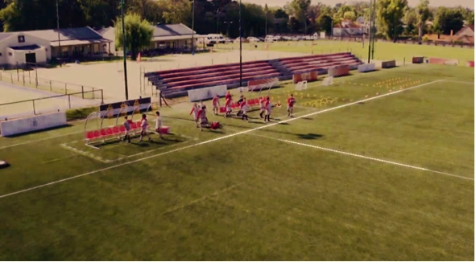
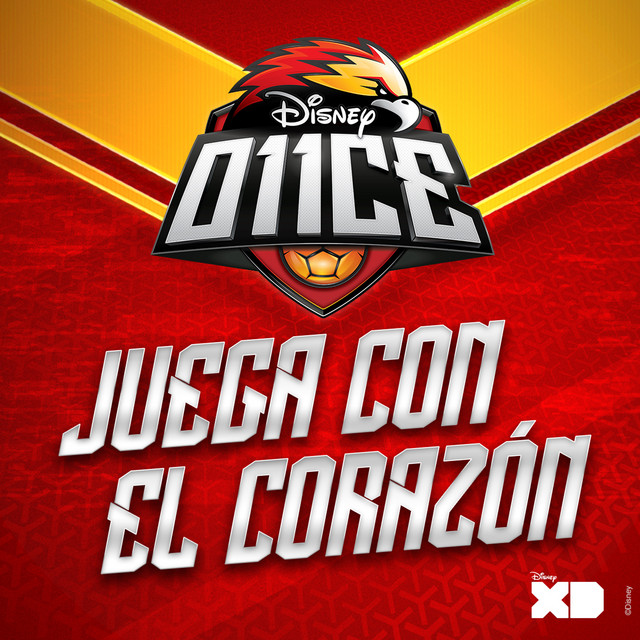

| Once | |||||
|---|---|---|---|---|---|
|
Once (estilizado como O11CE) es una serie de televisión de deporte y romance Juvenil argentina producida por Pol-ka Producciones en colaboración de Disney XD Latinoamérica, Disney Channel Latinoamérica y The Walt Disney Company Latin America, protagonizados por Mariano González-Guerineau y Sebastián Athie |
|||||
| Novedades | |||||
|  | |||||
| Contenido | |||||
| Personajes | Episodios | Equipos | Lugares | Premios | Musica |
.webp) |
 | ||||
| Protagonistas | Episodios | Equipos | Lugares | Premios | Musica |
| Menores | Temporada 1 Episodios del 1 al 80 |
Halcones Dorados | IAD | Intercopa | Del estadio al cielo |
| Futbolistas | Temporada 2 Episodios 81 al 160 |
Aguilas | Cancha IAD | Torneo Intercontinental |
Atrapame si puedes
Sebastian Athie, Daniel Patiño, Paulina Vetrano - Juega con el corazón (De "O11CE") Juega con el corazón ("De O11CE") |
| voleybolistas | Temporada 3 Episodios 161 al 220 |
Atomos | Alamo Seco | Mundial |